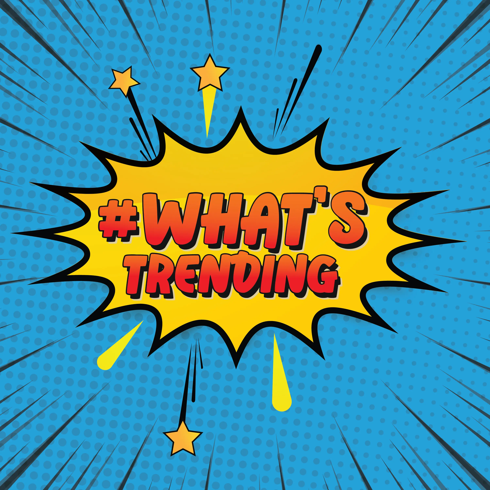

Media sosial memiliki pengaruh besar dalam kehidupan sehari-hari, terutama dalam menciptakan tren.
Tren, singkatan dari "trending" merujuk pada topik yang banyak dibahas dalam suatu periode dan sering
kali berkembang dengan cepat. Tren dapat mempengaruhi berbagai aspek kehidupan, seperti perilaku, gaya
hidup, kesehatan mental, serta interaksi sosial. Remaja masa kini sangat aktif di media sosial,
menjadikannya sebagai sumber utama informasi dan hiburan. Secara perlahan media sosial mulai membentuk
kebiasaan, pola pikir, serta cara mereka berinteraksi dengan orang lain. Dampaknya bisa positif maupun
negatif, tergantung pada bagaimana tren tersebut diikuti dan diinterpretasikan dalam kehidupan sehari-hari.

Media sosial dapat memberikan dampak positif bagi remaja, terutama sebagai sumber inspirasi dan kreativitas. Melalui berbagai platform, remaja dapat menemukan serta mengembangkan minat mereka dalam berbagai bidang, seperti seni, fashion, dan fotografi. Selain itu, media sosial juga membuka peluang bagi remaja untuk meningkatkan keterampilan diri, seperti public speaking, editing video, hingga berwirausaha. Tidak hanya sebagai sarana hiburan, media sosial juga memudahkan remaja dalam menjalin interaksi sosial. Mereka dapat berkomunikasi dengan teman dari berbagai daerah, bertukar pengalaman, serta memperluas jaringan pertemanan. Kemudahan akses informasi juga menjadi salah satu manfaat besar yang ditawarkan oleh media sosial. Remaja dapat dengan cepat memperoleh informasi terkini mengenai pendidikan, kesehatan, dan berbagai isu global yang dapat memperkaya wawasan merek
Namun, media sosial juga memiliki dampak buruk yang dapat mempengaruhi remaja. Salah satu contohnya adalah tren mengenai “standar kecantikan” yang tidak realistis. Banyak remaja merasa harus mengikuti standar tersebut, sehingga mereka terdorong untuk melakukan diet yang tidak sehat atau merasa kurang percaya diri dengan penampilan mereka sendiri. Hal ini dapat berdampak pada kesehatan fisik maupun mental. Selain itu, kecanduan media sosial menjadi masalah yang semakin umum di kalangan remaja. Data menunjukkan bahwa sekitar 51,4% remaja mengalami kecanduan media sosial tingkat rendah. Kebiasaan ini dapat mengganggu produktivitas, membuat mereka sulit fokus dalam belajar, serta mengurangi waktu untuk berinteraksi secara langsung dengan keluarga dan teman.
Tidak hanya itu, banyak tren di media sosial yang menyebarkan informasi tidak valid atau hoaks. Jika remaja menerima informasi tanpa memverifikasi kebenarannya, mereka bisa saja percaya pada hal yang salah dan bahkan ikut menyebarkannya. Hal ini sangat berbahaya, terutama jika informasi yang beredar berkaitan dengan kesehatan, pendidikan, atau isu sosial yang sensitif. Oleh karena itu, remaja perlu lebih bijak dalam menggunakan media sosial. Mereka harus mampu memilah informasi yang benar, tidak mudah terpengaruh oleh tren negatif, serta tetap menjaga keseimbangan antara dunia digital dan kehidupan nyata.